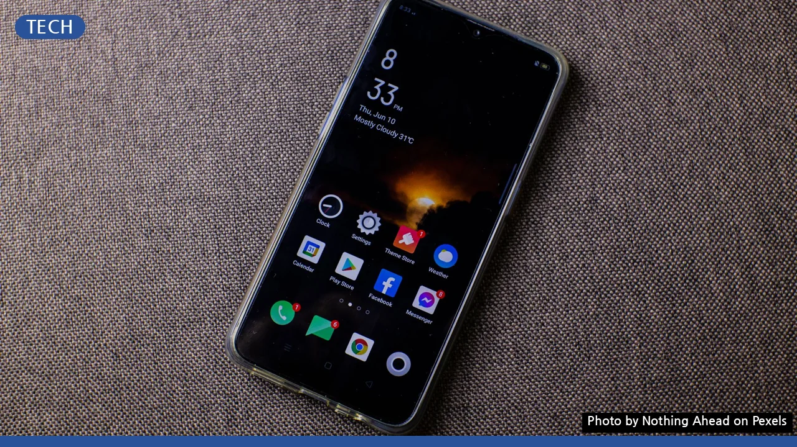
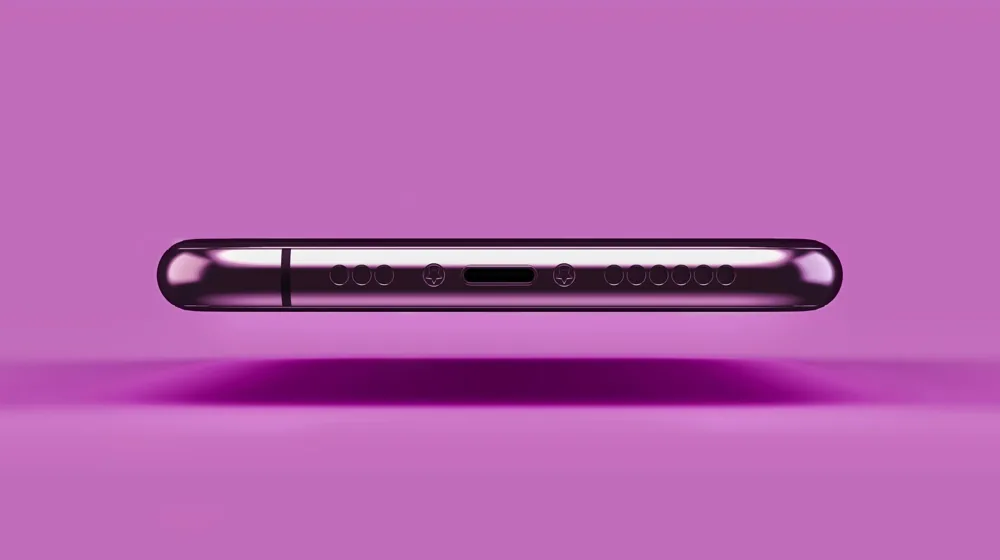

스마트폰 배터리 수명 2배 늘리는 법? 놓치기 쉬운 핵심 관리 팁
사진: Nothing Ahead / Pexels (무료 이미지, 출처 표기)
매년 바꾸는 스마트폰, 배터리 때문에 고민이셨나요?

새 스마트폰을 사도 1년 남짓 지나면 배터리 성능이 눈에 띄게 줄어든다고 느끼는 분들이 많습니다. 배터리 소모가 빨라지면 충전기를 찾아 헤매거나 보조배터리를 필수로 챙겨야 하는 불편함이 따르죠. 하지만 몇 가지 습관과 설정만 바꿔도 스마트폰 배터리 수명을 효과적으로 연장할 수 있습니다. 흔히 잘못 알고 있는 상식부터 실제로 수명을 늘리는 핵심 관리 팁까지, 지금 바로 적용할 수 있는 방법을 알려드립니다.
스마트폰 배터리, 이렇게 충전하세요
리튬이온 배터리를 사용하는 대부분의 스마트폰은 충전 방식에 따라 수명에 큰 영향을 받습니다. 배터리 전문가들은 완전 방전과 완전 충전 모두 배터리에 스트레스를 준다고 말합니다. 가장 이상적인 충전 범위는 20%에서 80% 사이를 유지하는 것입니다.
- 20~80% 규칙 지키기: 배터리 잔량이 20% 이하로 떨어지기 전에 충전을 시작하고, 80% 내외에서 충전을 멈추는 것이 좋습니다. 많은 최신 스마트폰에는 '배터리 보호' 또는 '최적화된 배터리 충전' 기능이 있어, 사용자의 충전 패턴을 학습해 밤샘 충전 시에도 80%에서 잠시 멈췄다가 기상 시간에 맞춰 100%로 채우는 기능을 제공합니다. 이 기능을 적극 활용해보세요.
- 고속 충전, 꼭 필요할 때만: 급하게 충전해야 할 때 고속 충전은 유용하지만, 이때 발생하는 높은 발열은 배터리 수명에 부정적인 영향을 줄 수 있습니다. 평소에는 일반 충전 방식을 사용하거나, 고속 충전 중 스마트폰 발열이 심하다면 잠시 사용을 중단하는 것이 좋습니다.
- 정품 충전기 사용: 스마트폰 제조사들은 안전과 효율성을 위해 정품 충전기 및 케이블 사용을 권장합니다. 비정품 충전기는 전압이나 전류가 불안정하여 배터리에 손상을 주거나 심지어 안전사고로 이어질 위험도 있습니다.
이것만 꺼도 배터리 뚝심! 스마트폰 설정 최적화
스마트폰의 여러 설정은 배터리 소모에 큰 영향을 미칩니다. 불필요한 기능을 끄거나 설정을 변경하는 것만으로도 체감할 수 있는 배터리 절약 효과를 얻을 수 있습니다.
- 위치 서비스: 지도 앱이나 내비게이션 등 위치 정보를 활용하는 앱을 사용할 때만 켜두고, 평소에는 꺼두는 것이 좋습니다. 백그라운드에서 지속적으로 위치를 추적하는 것은 배터리 소모의 주범 중 하나입니다.
- 백그라운드 앱 새로 고침: 앱이 실행되지 않는 동안에도 최신 정보를 가져오도록 하는 기능입니다. 불필요한 앱은 이 기능을 꺼두면 백그라운드에서의 배터리 소모를 크게 줄일 수 있습니다. '설정 > 앱 > 해당 앱 선택 > 백그라운드 앱 새로 고침'에서 설정할 수 있습니다.
- 자동 밝기 대신 수동 조절: 주변 환경에 따라 화면 밝기를 자동으로 조절하는 기능은 편리하지만, 센서 작동과 불필요하게 밝은 화면으로 배터리 소모가 클 수 있습니다. 평소에는 화면 밝기를 수동으로 낮게 설정하고 필요할 때만 조절하는 습관을 들이세요.
- 블루투스 및 Wi-Fi: 사용하지 않을 때는 꺼두는 것이 원칙입니다. 특히 Wi-Fi는 연결되지 않은 상태에서도 계속 네트워크를 검색하기 때문에 배터리를 소모합니다.
- 진동 및 햅틱 피드백: 키보드를 누르거나 알림이 올 때 느껴지는 진동(햅틱 피드백)도 배터리를 제법 소모합니다. 소리 알림으로 충분하다면 진동을 끄거나 강도를 약하게 설정해보세요.
앱과 화면 설정으로 배터리 아끼기
스마트폰 사용의 핵심인 앱과 화면 설정 역시 배터리 효율에 중요한 영향을 미칩니다. 몇 가지 간단한 조작으로 배터리 사용 시간을 늘릴 수 있습니다.
- 다크 모드 활용: OLED 디스플레이를 탑재한 스마트폰(대부분의 최신 플래그십 모델)은 다크 모드를 사용하면 검은색 픽셀을 완전히 끄기 때문에 배터리 소모를 크게 줄일 수 있습니다. '설정 > 디스플레이 > 다크 모드(또는 어두운 모드)'에서 설정할 수 있습니다.
- 화면 주사율 낮추기: 120Hz(헤르츠) 등 고주사율을 지원하는 스마트폰의 경우, 화면이 부드럽게 보이지만 배터리 소모가 많습니다. 평소에는 60Hz 등 일반 주사율로 낮춰 사용하면 배터리 절약에 도움이 됩니다. (단, 기기별 설정 방법 상이)
- 불필요한 알림 끄기: 수많은 앱에서 오는 푸시 알림은 화면을 켜고 진동을 울리는 등 배터리 소모를 유발합니다. 중요하지 않은 앱의 알림은 '설정 > 알림'에서 꺼두는 것이 좋습니다.
- 사용하지 않는 앱 삭제: 백그라운드에서 알게 모르게 배터리를 소모하는 앱이 있을 수 있습니다. 사용 빈도가 낮은 앱은 과감히 삭제하여 시스템 부하를 줄이고 배터리를 아낄 수 있습니다.
배터리 수명 연장을 위한 올바른 사용 습관
스마트폰을 어떻게 사용하고 관리하느냐에 따라 배터리 수명은 크게 달라질 수 있습니다. 장기적인 관점에서 배터리를 보호하는 습관을 들여보세요.
- 극심한 온도 피하기: 스마트폰 배터리는 고온과 저온 모두에 취약합니다. 한여름 차 안에 방치하거나 한겨울 야외에서 오랜 시간 사용하는 것은 배터리 수명을 단축시키는 지름길입니다. 직사광선을 피하고, 가급적 상온에서 사용하는 것이 좋습니다.
- 충전 중 케이스 제거 고려: 충전 시 발생하는 발열은 배터리에 좋지 않습니다. 특히 두꺼운 케이스를 장착한 상태로 고속 충전을 하면 열이 제대로 방출되지 않을 수 있으므로, 충전 중에는 케이스를 잠시 벗겨두는 것을 고려해보세요.
- 배터리 성능 주기적 확인: 아이폰은 '설정 > 배터리 > 배터리 성능 상태'에서 최대 성능을 확인할 수 있습니다. 안드로이드폰은 삼성 멤버스 앱이나 AccuBattery 같은 서드파티 앱을 통해 배터리 상태를 점검할 수 있습니다. 배터리 성능이 현저히 떨어졌다면 교체를 고려해야 합니다. (2024년 5월 기준)
배터리 오래 쓰는 법, 자주 묻는 질문
스마트폰 배터리 관리에 대해 많은 분들이 궁금해하는 질문들을 모아봤습니다.
Q: 밤새 충전해도 괜찮을까요?
A: 최신 스마트폰에는 과충전을 방지하는 회로가 내장되어 있어 밤새 충전해도 폭발 등의 위험은 낮습니다. 하지만 80% 근처에서 충전을 멈추는 '배터리 보호' 기능을 활용하는 것이 장기적인 배터리 수명에는 더 이롭습니다. 배터리 보호 기능이 없다면 잠들기 전 80~90% 정도 충전 후 코드를 뽑는 것이 좋습니다.
Q: 배터리 잔량 0%까지 쓰고 충전해야 하나요?
A: 과거 니켈 기반 배터리(니켈-카드뮴, 니켈-수소)에 해당하던 '메모리 효과' 때문에 생긴 오해입니다. 현재 사용되는 리튬이온 배터리는 완전 방전될 경우 오히려 배터리에 악영향을 미칩니다. 20% 이하로 내려가지 않도록 관리하는 것이 중요합니다.
Q: 절전 모드는 항상 켜두는 게 좋을까요?
A: 절전 모드는 배터리 소모를 줄이지만, CPU 성능 저하, 백그라운드 데이터 제한, 화면 밝기 감소 등 스마트폰의 전반적인 성능을 제한합니다. 꼭 필요할 때만 켜고, 평소에는 위의 관리 팁들을 활용하여 배터리를 절약하는 것이 좋습니다.
🔗 이 글도 함께 보면 좋아요: 알루미늄(Al) 원소: 현대 사회를 지탱하는 핵심 소재의 모든 것
관련 추천 상품
스마트폰 보조배터리, 고속 충전기, 스마트폰 케이스 관련 인기 상품 보러가기
이 포스팅은 쿠팡 파트너스 활동의 일환으로, 이에 따른 일정액의 수수료를 제공받습니다.